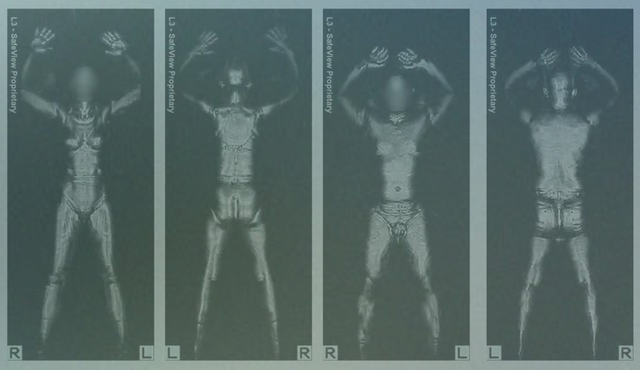

Security Changes since 9/11/2001
After 9/11: What has changed technologically and procedurally at security checkpoints?
It's obvious that security at airports has changed drastically, and it is generally agreed that most of these changes are as a result of 9/11 the formation of the TSA. While some of these technologies are new technical advances, others are in place purely because of the 9/11 attacks. Many Muslim Americans are needlessly re-examined at security checkpoints despite clean scans.
Prior to 9/11, one of the most obvious differences to the TSA and security procedures of today was the airline-hired security screeners. The compartmentalization and light regulation of this airline-hosted screening made for weak threat detection and even allowed some individuals with fake law enforcement badges to get past security. Going back even further before that 2001 sudden shift, airlines historically did simple ticket checks and checked bags were immediately put onto the plane. This led to the post-9/11 complaints of over-zealous screening by the TSA.
The TSA itself did not exist until after 9/11. Security scans were done by private staff.
The TSA itself did not exist until after 9/11, which is an important difference to note (especially for those who hardly remember flying before 9/11.) It was formed as an agency of the U.S. Department of Homeland Security (also formed reactionarily post-9/11). Just a two months after 9/11, on 11/19/2001, the TSA was created as a nationwide security administration for airports.
It's especially remarkable that the technology installed in security checkpoints still leads to obvious skewed racial proportions of travelers pulled aside for extra scanning. The procedures essentially expose any risks immediately, and a risk is a risk to the scanner no matter the race of the traveler.
In conclusion, the terrorist attacks on 9/11 were incredibly influential for Airport Security. The reimagination of airport security was the result of a striking wakeup call for airlines across the world. Today, we see a drastic increase in the acceptance of new technology and procedures, but there is always healthy challenging of these changes, especially with regard to race and Islam. The role of security professionals, equipment, and profiling are all important topics for the future of Muslim and racial objectivity.